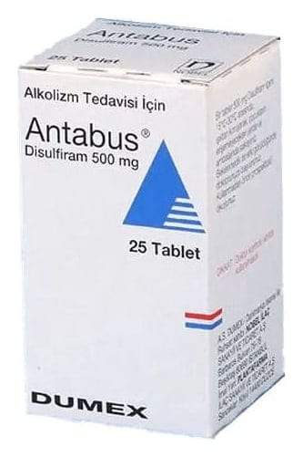

Antabus 500 mg Tablet, 25 Tablet

Ne için kullanılır
KT · Bölüm 1ANTABUS alkol bağımlılığının tedavisinde kullanılan ilaçlar grubunda yer alır.
ANTABUS, 25 tabletlik ambalajlarda bulunur. Beyaz renkli, bir yüzü düz, diğer yüzü çift çentikli tabletlerdir.
ANTABUS, etkin madde olarak 500 mg disülfiram içerir.
Disülfiram alkol bağımlılığı tedavisinde destekleyici olarak kullanılır. Alkol aldığınızda, alkol vücudunuzda asetaldehit adı verilen maddeye dönüşür. Disülfiram asetaldehiti parçalayan enzimi bloke eder. Kanda asetaldehit düzeyinin artmasına bağlı olarak istenmeyen fiziksel etkiler oluşur.
ANTABUS kullanırken alkol tükettiğiniz takdirde istenmeyen fiziksel etkiler hissedeceksiniz ve daha fazla alkol almak istemeyeceksiniz.